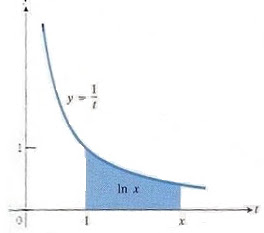

Taylor açılımı tekniğini ilk gördüğümüzde öğrenci genelde kendine şu soruyu sorar: “İyi ama, bu ne işe yarar?” Taylor serilerini ilginç kılan özellik, bir formülü bir başkasına dönüştürmemizi sağlamaları, ve, genelde sonsuz olmayan bir formülü, sonsuza kadar devam eden terimlerin toplamı olan başka bir formül ile değiştirmemizi sağlamalarıdır.
Sonsuza kadar devam eden terimler toplamı, karışık bir durumdur. Teklikten, çokluğa niye gidilmektedir? Bu sonsuz terimler dizisi ne işe yaramaktadır? Öğrenciye göre, düzenden, düzensizliğe gidilmiştir. Niçin? Bu tür sorular, Taylor serilerinin tanıştırıldığı her derste cevaplanmalıdır. Bu yazıda, Taylor serisinin ne işe yaradığını, hangi problemler için kullanıldığını, ve ait olduğu matematiksel dünyanın hangisi olduğunu göreceğiz.
Yaklaşıklamak (Approximation)
Yaklaşıklamak, bir değeri, fonksiyonu, matematiksel bir kavramın yerine ona yakın, aşağı yukarı eşit olan başka bir değeri/fonksiyonu/kavramı koymak demektir. Gündelik hayatta bazı sayıları sürekli başkaları ile yaklaşıklamaya uğraşmaktayız. Mesela bir alan, uzunluk, hacim, vs. gibi şeyler ölçerken, mecburen yaklaşıksal kavramlar ile yüzyüze gelmekteyiz. Normalde gündelik hayatımızda sadece tamsayılar ve tamsayıların bölümü olarak gösterilebilecek rasyonel sayılar kullanırız, fakat matematikte rasyonel sayıların yanında, irrasyonel sayılar da mevcuttur. Ölçümlerimiz sırasında irrasyonel sayılar ortaya çıkmasalar da, teorik argümanlarımız ve işlemlerimiz çoğunlukla bizi o yöne doğru itiverir. Yarıçapı 1/2 olan bir çemberin uzunluğu pi denilen ‘irrasyonel’ sayıdır, ya da iki kenarı eşit, bir birim uzunluğunda olan dik üçgenin hipotenüsü 2’nin kareköküdür, bu sayı da irrasyonel bir sayıdır. “İrrasyonel” kelimesinin İngilizce’de ‘deli’, ‘üşütük’, veya ‘mantıksız’ olarak karşılık bulması da ilginçtir. İrrasyonel sayılar virgülden sonra bile sonsuza kadar devam etmektedirler [3].
Bu sebeple, irrasyonel sayılar ile işlem yaparken, onları ‘rasyonel’ bir sayı ile yaklaşıklamak gerekir. Bunu yapmak için çoğu zaman virgülden sonra belli bir basamak sonrasını atarız [3].
Başka bir alanı ele alalım: Doğa bilimleri sürekli fonksiyonlar ile bir yaklaşıklama eylemi içindedirler. Doğanın ölçümsel gizemleri matematikte bir fonksiyon olarak gösterilir, ve bu fonksiyonlar hiçbir zaman kesinkes, tıpatıp her seviyede ve her molekülü anlatan betimler değildir. Elde olan, yaklaşıksal olarak ve şartlara göre kesinlik derecesi bazen çok, bazen daha fazla olan bir ibaredir [3].
Bâzen de, doğal şartlara hiç alâkası olmayan “pür matematiksel” bir fonksiyonu başka bir fonksiyon ile değiştirmeye mecbur kalabiliriz. Bunu da, genelde başlangıç fonksiyonunu hesaplayabilmek için yaparız [3].
Şimdi yaklaşıklamak istediğimiz log() fonksiyonuna gelelim.
Log Nedir?
\(Log(x)\) fonksiyonu en basit şekilde \(f(t)=1/t\) fonksiyonunun, 1 değeri ile x değeri arasında kalan alanıdır [4]. Yani, bu fonksiyonunun entegralinin 1 ile x değeri arasındaki değeridir (entegralin alan hesapladığını lise matematiğinden biliyoruz).

\[ \ln x = \int_{1}^{x} \frac{1}{t}, \qquad \frac{d(\ln x)}{dx} = \frac{1}{x}\]
Sembolik olarak logaritma fonksiyonu, çarpma işlemlerini toplamaya çevirmemizi sağladığı için matematiksel olarak çok yararlı bir araçtır. Zaten, keşfedilme sebebi de budur. Bu yaygın kullanım, uygulamalar için logaritmanın bir aşamada hesaplanmasını gerektirmektedir. Fakat, görüldüğü gibi 1/t fonksiyonu entegral işleminden sonra güzel bir matematiksel fonksiyona dönüşmediği için, yaklaşıksal yöntemlere gereksinim duymaktayız. Taylor açılımı işte burada imdadımıza yetişmektedir.
Örnek olarak, log(20) işleminin sonucunu Taylor serisinin yardımı ile hesaplayacağız. Niye Taylor açılımı? Çünkü log fonksiyonunun her dereceden türevi mevcut, Taylor açılımı için de bu türevler lazım.
Log’un Açılımı
Log fonksiyonunu nasıl açarken, amatör bir başlangıç şöyle olabilirdi. Dikkat edelim, şu anda sadece sembolik olarak işlem yapıyoruz.
\[ f(x) = \log(x) \]
\[ f'(x) = \frac{1}{x}, f''(x) = \frac{-1}{x^2}, f'''(x)=.. \]
\[ f(x) \approx f(a) + f'(a)(x-a)+\frac{f''(a)}{2!}(x-a)^2 + ... \]
\[ f(x) \approx \log(a) + \frac{1}{a}(x-a) + \frac{\frac{-1}{a^2}}{2!}(x-a)^2 \]
Bu pek derli toplu bir açılım olarak gözükmüyor. \(a=0\) seçersek,
\[ f(x) \approx \log(a) + \frac{1}{a}(x-a) + \frac{\frac{-1}{a^2}}{2!}(x-a)^2 + ..\]
\[ f(x) \approx \log(0) + \frac{1}{a}x + \frac{\frac{-1}{0^2}}{2!}(x)^2 + ..\]
çıkar. \(log(0)\) tanımsızdır. Yani bu açılım işimize yaramayacak. Daha temiz bir açılım için matematikçiler şu yöntemi bulmuştur.
\(log(x)\) yerine, \(log(1+x)\) kullanalım.
\[ f(x) = \log(1+x) \]
\[ f'(x) = \frac{1}{1+x}, f''(x) = \frac{-1}{1+x}^2, f'''(x) = ... \]
\[ f(x) \approx f(a) + f'(a)(x-a) + \frac{f'''(a)}{2!}(x-a)^2 + ... \]
\(a = 0\) alırsak
\[ f(x) \approx \log(1+a) + \frac{1}{1+a} (x-a)+ \frac{\frac{-1}{(1+a)^2}}{2!} (x-a)^2\]
\[ f(x) \approx \log(1) + \frac{1}{1}(x) + \frac{\frac{-1}{1^2}}{2!} (x)^2\]
\[ f(x) \approx 0 + \frac{1}{1}(x) \frac{\frac{-1}{1^2}}{2!} (x)^2 \]
\[ f(x) \approx x - \frac{x^2}{2!} + \frac{x^3}{3!} ... \]
Bu çok daha temiz oldu. Dikkat ederseniz, entegrali düzgün olmayan \(log()\) fonksiyonunun Taylor açımı ne kadar temiz oldu. Bu fonksiyonu bilgisayar ile hesaplamak çok basittir. Artık log(20)’yi hesaplamaya hazırız.
\[ f(x) \approx x - \frac{x^2}{2!} + \frac{x^3}{3!} ... \]
\[ \log(20) \approx 20 - \frac{20^2}{2!} + \frac{20^3}{3!} ... \]
Ama dikkat! Açılan fonksiyonunu hesaplarken x’e verdiğimiz değerin a noktasına yakın olması önemlidir.
Çok uzak noktalar (yukarıdaki log(20)’nin açılımının olduğu gibi) elimizdeki yeni seriyi uzaklastiran (diverging) bir seri haline getirebilir. Bunun tersi olan yakınlasan (converging) seriler, elinizdeki terim sayısını biz arttırdıkça, sabit bir sayıya doğru yönelen serilere denir. Bizim amacımız hesap yapmak olduğuna göre, bir somut sayıya doğru yönelen bir seriyi tabii ki tercih ederiz. Bu sebeple elimizdeki serinin, istediğimiz x değeri için yakinlasan bir seri mi, yoksa uzaklasan bir seri mi olduğunu çok iyi bilmek zorundayız.
\(log(1+x)\)’in Taylor açılımı sadece \(-1\)
Burada, log aritmetiği yardımımıza erişiyor. Log işlemlerinde, bölmenin çıkarmaya, çarpmanın toplamaya dönüştüğünü hatırlayalım. Yâni Log(x*y) = log(x) + log(y), ve log(x/y) = log(x) - log(y) olur.
O zaman, \(\log(20)\)’yi 1’den küçük sayılar kullanacak şekilde yeniden yazalım:
\[ \log(20) = \log( \frac{\frac{1}{2}}{\frac{1}{40}}) = \log(\frac{1}{2})-\log(\frac{1}{40}) \]
\[ \log(1+x) \approx x - \frac{x^2}{2!} + \frac{x^3}{3!} \]
Not: \((1+x)\)’in \(\frac{1}{2}\) vermesi için \(x\)’in \(-\frac{1}{2}\) olması gerekir.
\[ log(\frac{1}{2}) \approx -\frac{1}{2} - \frac{-\frac{1^2}{2}}{2!} + \frac{-\frac{1^3}{2}}{3!} - ... \]
Aynı şekilde \(1/40\) için durum aynıdır.
\[ log(\frac{1}{40}) \approx -\frac{39}{40} - \frac{-\frac{39^2}{40}}{2!} - \frac{-\frac{39^3}{40}}{3!} + ... \]
Bu kadar! Sağ tarafta gözüken serilerin hesabını, bir Python programı ile yaptık.
def taylor_ile_log(bolum, bolen, taylor_ile_acilim_buyuklugu):
sum = 0
for i in range(1,taylor_ile_acilim_buyuklugu):
sum += np.power(-1, i+1) * (np.power(bolum/bolen, i) / i)
return sum
print (taylor_ile_log(-39.0, 40.0, 160))-3.68527101165LISP
;;
;; Not: (/ 1 2) yazilirsa, Common Lisp 0 cevabi veriyor.
;; Bunun sebebi, 1 2 deyince, parametrelerin integer
;; (tamsayi) olarak anlasilmasiymis, parametreler tamsayi
;; olunca, sonucta tamsayi olarak donuyor. O yuzden kesirli
;; cevaplar almak icin, (/ 1.0 2.0) demek lazim.
;;;;;;;;;;;;;;;;;;;;;;;;;;;;;;;;;;;;;;;;;;;;;;;;;;;;;;
(defun power (Base Exponent)
"Reproduced EXPT in case where Exponent is non-negative integer"
(cond
((= Exponent 0) 1)
((evenp Exponent)(Power (* Base Base) (/ Exponent 2)))
(t (* Base (Power Base (- Exponent 1))))) )
;;;;;;;;;;;;;;;;;;;;;;;;;;;;;;;;;;;;;;;;;;;;;;;;;;;;;;
(defun basit-taylor-ile-log-of-1-bolu-2 ()
(+
(* +1 ;;; taylor serisinin birinci terimi
(/
(power (/ -1.0 2.0)
1)
1)
)
(* -1 ;;; taylor serisinin ikinci terimi
(/
(power (/ -1.0 2.0)
2)
2)
)
(* +1 ;;; taylor serisinin ucuncu terimi
(/
(power (/ -1.0 2.0)
3)
3)
)
;
; vs...vs..
;
)
)
;;;;;;;;;;;;;;;;;;;;;;;;;;;;;;;;;;;;;;;;;;;;;;;;;;;;;;
(defun taylor-ile-log-hesapla (bolum bolen taylor-acilim-buyuklugu)
(let ((sum 0)(i 1))
(loop for i from 1 to taylor-acilim-buyuklugu do
(setq sum (+ sum (* (power -1 (+ i 1))
(/
(power (/ bolum bolen)
i)
i)
)))
)
sum)
)
(print "------------- 1/2 (yani log( 1 + (-1/2)) Hesabi -----")
(print "Basit kod")
(print (basit-taylor-ile-log-of-1-bolu-2))
(print "Daha cok taylor terimi kullanan kod")
(print (taylor-ile-log-hesapla -1.0 2.0 100))
(print "Bilgisayarin kendi log()'undan gelen sonuc")
(print (log (/ 1.0 2.0)))
(print "------------- 1/40 (yani log( 1 + (-39/40)) ------- ")
(print "160 taylor terimi")
(print (taylor-ile-log-hesapla -39.0 40.0 160))
(print "180 taylor terimi")
(print (taylor-ile-log-hesapla -39.0 40.0 180))
(print "200 taylor terimi")
(print (taylor-ile-log-hesapla -39.0 40.0 200))
(print "220 taylor terimi")
(print (taylor-ile-log-hesapla -39.0 40.0 220))
(print "240 taylor terimi")
(print (taylor-ile-log-hesapla -39.0 40.0 240))
(print "260 taylor terimi")
(print (taylor-ile-log-hesapla -39.0 40.0 260))
(print "Bilgisayarin kendi algoritmasina gore log(1/40)")
(print (log (/ 1.0 40.0)))
(print "--------------- Sonuc --------------------- ")
(print "log(1/2) - log(1/40)")
(print (- (taylor-ile-log-hesapla -1.0 2.0 100)
(taylor-ile-log-hesapla -39.0 40.0 200)))
(print "Bilgisayarin mevcut algoritmasinin verdigi ")
(print (log 20))Kaynaklar
[3] Thomas, Thomas’ Calculus